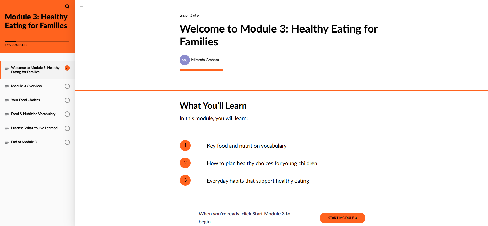
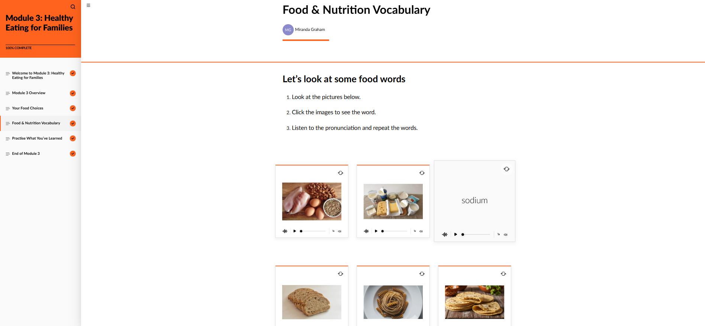
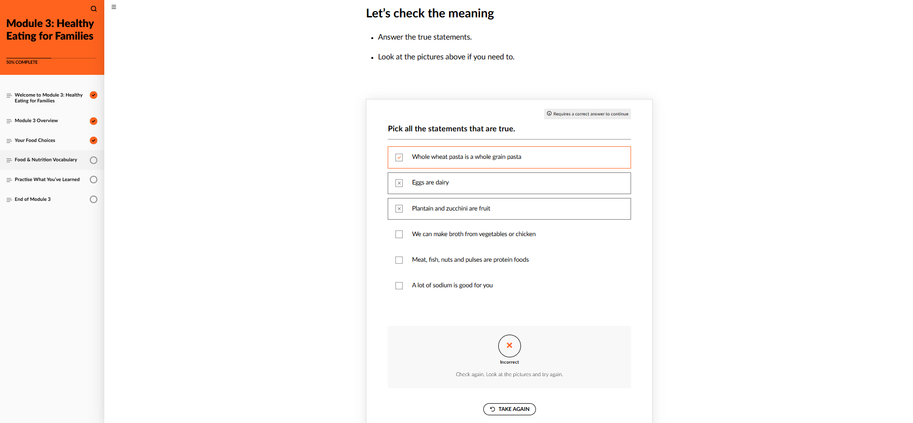
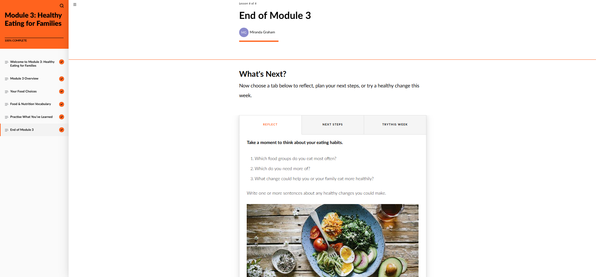

English for Childcare
Articulate Rise 360 | Prototype Screenshots
Selected screenshots illustrating the learning experience, vocabulary development, practice activities and reflection.
1. Welcome Screen

2. Vocabulary Flashcards

3. Practice Activity

4. Reflection and Next Steps
